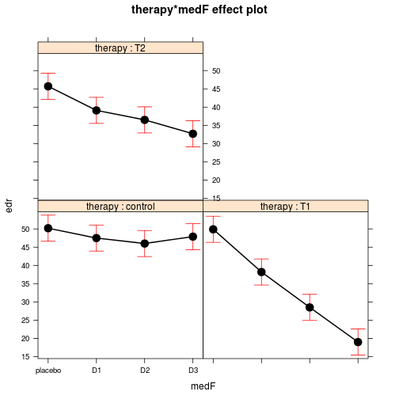

library(multcomp)
library(car)
library(effects)
library(phia)
These examples have been largely inpired by Helios De Rosario-Martinez
Boik data set from phia is based on the hypothetical example used by R.J. Boik (1979) to explain the analysis of interaction contrasts. It represents the electrodermal response of 72 students complaining of hemophobia, treated with different fear reduction therapies and doses of antianxiety medication, in a balanced factorial design. The response variable edr is modeled with two factors therapy, with levels control, T1, and T2 and medication, with levels placebo, D1, D2, and D3 in interaction.
some(Boik)
## therapy medication edr
## 3 control placebo 53.15
## 8 control D1 49.29
## 16 control D2 44.86
## 27 T1 placebo 48.06
## 32 T1 D1 35.20
## 49 T2 placebo 49.40
## 53 T2 placebo 45.22
## 54 T2 placebo 41.36
## 58 T2 D1 38.31
## 64 T2 D2 40.51
table(Boik[, 1:2])
## medication
## therapy placebo D1 D2 D3
## control 6 6 6 6
## T1 6 6 6 6
## T2 6 6 6 6
I chose to tweak a bit this data set to avoid using the medication as an ordered factor to ease my interpretation of linear models outputs.
Boik$medF <- factor(as.character(Boik$medication), levels = c("placebo", "D1", "D2", "D3"))
levels(Boik$medF)
## [1] "placebo" "D1" "D2" "D3"
mod.boik <- lm(edr ~ therapy * medF, data = Boik)
mod.boik.M <- lm(edr ~ therapy + medF, data = Boik)
summary(mod.boik)
##
## Call:
## lm(formula = edr ~ therapy * medF, data = Boik)
##
## Residuals:
## Min 1Q Median 3Q Max
## -11.358 -1.857 0.307 2.717 7.714
##
## Coefficients:
## Estimate Std. Error t value Pr(>|t|)
## (Intercept) 50.200 1.787 28.10 < 2e-16 ***
## therapyT1 -0.301 2.527 -0.12 0.906
## therapyT2 -4.501 2.527 -1.78 0.080 .
## medFD1 -2.701 2.527 -1.07 0.289
## medFD2 -4.201 2.527 -1.66 0.102
## medFD3 -2.301 2.527 -0.91 0.366
## therapyT1:medFD1 -8.998 3.573 -2.52 0.014 *
## therapyT2:medFD1 -3.899 3.573 -1.09 0.280
## therapyT1:medFD2 -17.199 3.573 -4.81 1.0e-05 ***
## therapyT2:medFD2 -4.998 3.573 -1.40 0.167
## therapyT1:medFD3 -28.599 3.573 -8.00 4.8e-11 ***
## therapyT2:medFD3 -10.699 3.573 -2.99 0.004 **
## ---
## Signif. codes: 0 '***' 0.001 '**' 0.01 '*' 0.05 '.' 0.1 ' ' 1
##
## Residual standard error: 4.38 on 60 degrees of freedom
## Multiple R-squared: 0.843, Adjusted R-squared: 0.815
## F-statistic: 29.4 on 11 and 60 DF, p-value: <2e-16
Anova(mod.boik)
## Anova Table (Type II tests)
##
## Response: edr
## Sum Sq Df F value Pr(>F)
## therapy 2444 2 63.8 1.4e-15 ***
## medF 2371 3 41.3 1.3e-14 ***
## therapy:medF 1376 6 12.0 8.5e-09 ***
## Residuals 1149 60
## ---
## Signif. codes: 0 '***' 0.001 '**' 0.01 '*' 0.05 '.' 0.1 ' ' 1
boik.means <- interactionMeans(mod.boik)
boik.means
## therapy medF adjusted mean
## 1 control placebo 50.2
## 2 T1 placebo 49.9
## 3 T2 placebo 45.7
## 4 control D1 47.5
## 5 T1 D1 38.2
## 6 T2 D1 39.1
## 7 control D2 46.0
## 8 T1 D2 28.5
## 9 T2 D2 36.5
## 10 control D3 47.9
## 11 T1 D3 19.0
## 12 T2 D3 32.7
interactionMeans(mod.boik, factors = "therapy")
## therapy adjusted mean
## 1 control 47.9
## 2 T1 33.9
## 3 T2 38.5
interactionMeans(mod.boik, factors = "medF")
## medF adjusted mean
## 1 placebo 48.6
## 2 D1 41.6
## 3 D2 37.0
## 4 D3 33.2
Several type of interaction plots are available to visualise the 'interaction effect'
plot(boik.means, multiple = TRUE)
plot(allEffects(mod.boik))

The columns medication1, . . . medication3 in the resulting table contain the value of the three orthogonal contrasts across the levels of medication, for each level of therapy (the only fixed factor in this example). In addition a F test (actually a global F test) is performed for each level of therapy
testInteractions(mod.boik, fixed = "therapy", across = "medF", adjustment = "none")
## F Test:
## P-value adjustment method: none
## medF1 medF2 medF3 Df Sum of Sq F Pr(>F)
## control 2.3 -0.4 -1.9 3 54 0.95 0.42
## T1 30.9 19.2 9.5 3 3154 54.90 < 2e-16 ***
## T2 13.0 6.4 3.8 3 539 9.38 3.6e-05 ***
## Residuals 60 1149
## ---
## Signif. codes: 0 '***' 0.001 '**' 0.01 '*' 0.05 '.' 0.1 ' ' 1
Behind the scene, testInteractions() calls testFactors(). The ones corresponding to the one above are detailed below.
con.therapy <- testFactors(mod.boik, levels = list(therapy = c("control")),
terms.formula = ~medF, adjustment = "none")
testFactors(mod.boik, levels = list(therapy = c("T1")), terms.formula = ~medF,
adjustment = "none")
testFactors(mod.boik, levels = list(therapy = c("T2")), terms.formula = ~medF,
adjustment = "none")
The cont.therapy ob
con.therapy
##
## Call: blogify()
##
## Term (Intercept)
##
## Adjusted mean:
##
## 47.9
##
## Linear hypothesis test
##
## Hypothesis:
## (Intercept) + 0.25 medFD1 + 0.25 medFD2 + 0.25 medFD3 = 0
##
## Model 1: restricted model
## Model 2: edr ~ therapy * medF
##
## Res.Df RSS Df Sum of Sq F Pr(>F)
## 1 61 56214
## 2 60 1149 1 55065 2875 <2e-16 ***
## ---
## Signif. codes: 0 '***' 0.001 '**' 0.01 '*' 0.05 '.' 0.1 ' ' 1
## ------
##
## Term medF
##
## Adjusted mean at contrasts of medF:
## medF1 medF2 medF3
## 2.3006 -0.4008 -1.8999
##
## Linear hypothesis test
##
## Hypothesis:
## - medFD3 = 0
## medFD1 - medFD3 = 0
## medFD2 - medFD3 = 0
##
## Model 1: restricted model
## Model 2: edr ~ therapy * medF
##
## Res.Df RSS Df Sum of Sq F Pr(>F)
## 1 63 1203
## 2 60 1149 3 54.38 0.947 0.424
## ------
names(con.therapy)
## [1] "call" "model.call" "levels"
## [4] "factor.contrasts" "covariates" "terms"
It contains notably the hypothesis matrix done for a global F test that test the non equality of the edr value for the designated therapy level across levels of medication.
con.therapy$terms$`(Intercept)`$adjusted.values
## [,1]
## [1,] 47.9
con.therapy$terms$medF$adjusted.values
## [,1]
## medF1 2.3006
## medF2 -0.4008
## medF3 -1.8999
con.therapy$terms$medF$hypothesis.matrix
## (Intercept) therapyT1 therapyT2 medFD1 medFD2 medFD3
## medF1 0 0 0 0 0 -1
## medF2 0 0 0 1 0 -1
## medF3 0 0 0 0 1 -1
## therapyT1:medFD1 therapyT2:medFD1 therapyT1:medFD2 therapyT2:medFD2
## medF1 0 0 0 0
## medF2 0 0 0 0
## medF3 0 0 0 0
## therapyT1:medFD3 therapyT2:medFD3
## medF1 0 0
## medF2 0 0
## medF3 0 0
The default contrasts definition used in the testInteractions() and testFactors() are takken from their default.contrasts=c("contr.sum","contr.poly"), which is usually not the ones that were used by default in R (see below and the mod.boik model). This is very important as it ensures that F tests and global F tests are meaningfull.
options("contrasts")
## $contrasts
## unordered ordered
## "contr.treatment" "contr.poly"
contr.sum(levels(Boik$medF))
## [,1] [,2] [,3]
## placebo 1 0 0
## D1 0 1 0
## D2 0 0 1
## D3 -1 -1 -1
contr.treatment(levels(Boik$medF))
## D1 D2 D3
## placebo 0 0 0
## D1 1 0 0
## D2 0 1 0
## D3 0 0 1
The therapy adjusted.values are computed using the folowing algebra.
# using the hypothesis matrix
con.therapy$terms$medF$hypothesis.matrix %*% coef(mod.boik)
## [,1]
## medF1 2.3006
## medF2 -0.4008
## medF3 -1.8999
# which correponds to a contrasts sum options
t(contr.sum(levels(Boik$medF))[-c(1), ]) %*% coef(mod.boik)[c(4:6)]
## [,1]
## [1,] 2.3006
## [2,] -0.4008
## [3,] -1.8999
# the default contrast (the one used in the model and summary output) are
# reprouced below
t(contr.treatment(levels(Boik$medF))[-c(1), ]) %*% coef(mod.boik)[c(2:4)]
## [,1]
## D1 -0.3008
## D2 -4.5012
## D3 -2.7014
Especially, how to reproduce classic univariates results.
coefs <- coefficients(mod.boik)
coefs
## (Intercept) therapyT1 therapyT2 medFD1
## 50.2004 -0.3008 -4.5012 -2.7014
## medFD2 medFD3 therapyT1:medFD1 therapyT2:medFD1
## -4.2005 -2.3006 -8.9975 -3.8985
## therapyT1:medFD2 therapyT2:medFD2 therapyT1:medFD3 therapyT2:medFD3
## -17.1985 -4.9984 -28.5994 -10.6990
linearHypothesis(mod.boik, names(coefs)[7:12], verbose = TRUE)
##
## Hypothesis matrix:
## (Intercept) therapyT1 therapyT2 medFD1 medFD2 medFD3
## therapyT1:medFD1 0 0 0 0 0 0
## therapyT2:medFD1 0 0 0 0 0 0
## therapyT1:medFD2 0 0 0 0 0 0
## therapyT2:medFD2 0 0 0 0 0 0
## therapyT1:medFD3 0 0 0 0 0 0
## therapyT2:medFD3 0 0 0 0 0 0
## therapyT1:medFD1 therapyT2:medFD1 therapyT1:medFD2
## therapyT1:medFD1 1 0 0
## therapyT2:medFD1 0 1 0
## therapyT1:medFD2 0 0 1
## therapyT2:medFD2 0 0 0
## therapyT1:medFD3 0 0 0
## therapyT2:medFD3 0 0 0
## therapyT2:medFD2 therapyT1:medFD3 therapyT2:medFD3
## therapyT1:medFD1 0 0 0
## therapyT2:medFD1 0 0 0
## therapyT1:medFD2 0 0 0
## therapyT2:medFD2 1 0 0
## therapyT1:medFD3 0 1 0
## therapyT2:medFD3 0 0 1
##
## Right-hand-side vector:
## [1] 0 0 0 0 0 0
##
## Estimated linear function (hypothesis.matrix %*% coef - rhs)
## therapyT1:medFD1 therapyT2:medFD1 therapyT1:medFD2 therapyT2:medFD2
## -8.998 -3.899 -17.199 -4.998
## therapyT1:medFD3 therapyT2:medFD3
## -28.599 -10.699
## Linear hypothesis test
##
## Hypothesis:
## therapyT1:medFD1 = 0
## therapyT2:medFD1 = 0
## therapyT1:medFD2 = 0
## therapyT2:medFD2 = 0
## therapyT1:medFD3 = 0
## therapyT2:medFD3 = 0
##
## Model 1: restricted model
## Model 2: edr ~ therapy * medF
##
## Res.Df RSS Df Sum of Sq F Pr(>F)
## 1 66 2525
## 2 60 1149 6 1376 12 8.5e-09 ***
## ---
## Signif. codes: 0 '***' 0.001 '**' 0.01 '*' 0.05 '.' 0.1 ' ' 1
summary(mod.boik)
##
## Call:
## lm(formula = edr ~ therapy * medF, data = Boik)
##
## Residuals:
## Min 1Q Median 3Q Max
## -11.358 -1.857 0.307 2.717 7.714
##
## Coefficients:
## Estimate Std. Error t value Pr(>|t|)
## (Intercept) 50.200 1.787 28.10 < 2e-16 ***
## therapyT1 -0.301 2.527 -0.12 0.906
## therapyT2 -4.501 2.527 -1.78 0.080 .
## medFD1 -2.701 2.527 -1.07 0.289
## medFD2 -4.201 2.527 -1.66 0.102
## medFD3 -2.301 2.527 -0.91 0.366
## therapyT1:medFD1 -8.998 3.573 -2.52 0.014 *
## therapyT2:medFD1 -3.899 3.573 -1.09 0.280
## therapyT1:medFD2 -17.199 3.573 -4.81 1.0e-05 ***
## therapyT2:medFD2 -4.998 3.573 -1.40 0.167
## therapyT1:medFD3 -28.599 3.573 -8.00 4.8e-11 ***
## therapyT2:medFD3 -10.699 3.573 -2.99 0.004 **
## ---
## Signif. codes: 0 '***' 0.001 '**' 0.01 '*' 0.05 '.' 0.1 ' ' 1
##
## Residual standard error: 4.38 on 60 degrees of freedom
## Multiple R-squared: 0.843, Adjusted R-squared: 0.815
## F-statistic: 29.4 on 11 and 60 DF, p-value: <2e-16
testFactors(mod.boik, levels = list(therapy = c("T1", "control"), medF = "placebo"),
adjustment = "none")$terms[["(Intercept)"]]$test
## Linear hypothesis test
##
## Hypothesis:
## therapyT1 = 0
##
## Model 1: restricted model
## Model 2: edr ~ therapy * medF
##
## Res.Df RSS Df Sum of Sq F Pr(>F)
## 1 61 1149
## 2 60 1149 1 0.272 0.01 0.91
testFactors(mod.boik, levels = list(therapy = c("T2", "control"), medF = "placebo"),
adjustment = "none")$terms[["(Intercept)"]]$test
## Linear hypothesis test
##
## Hypothesis:
## therapyT2 = 0
##
## Model 1: restricted model
## Model 2: edr ~ therapy * medF
##
## Res.Df RSS Df Sum of Sq F Pr(>F)
## 1 61 1210
## 2 60 1149 1 60.8 3.17 0.08 .
## ---
## Signif. codes: 0 '***' 0.001 '**' 0.01 '*' 0.05 '.' 0.1 ' ' 1
testFactors(mod.boik, levels = list(medF = c("D1", "placebo"), therapy = "control"),
adjustment = "none")$terms[["(Intercept)"]]$test
## Linear hypothesis test
##
## Hypothesis:
## medFD1 = 0
##
## Model 1: restricted model
## Model 2: edr ~ therapy * medF
##
## Res.Df RSS Df Sum of Sq F Pr(>F)
## 1 61 1171
## 2 60 1149 1 21.9 1.14 0.29
testFactors(mod.boik, levels = list(medF = c("D2", "placebo"), therapy = "control"),
adjustment = "none")$terms[["(Intercept)"]]$test
## Linear hypothesis test
##
## Hypothesis:
## medFD2 = 0
##
## Model 1: restricted model
## Model 2: edr ~ therapy * medF
##
## Res.Df RSS Df Sum of Sq F Pr(>F)
## 1 61 1202
## 2 60 1149 1 52.9 2.76 0.1
# D3 versus placebo in control group.
testFactors(mod.boik, levels = list(medF = c("D3", "placebo"), therapy = "control"),
adjustment = "none")$terms[["(Intercept)"]]$adjusted.values
## [,1]
## [1,] -2.301
testFactors(mod.boik, levels = list(medF = c("D3", "placebo"), therapy = "control"),
adjustment = "none")$terms[["(Intercept)"]]$test
## Linear hypothesis test
##
## Hypothesis:
## medFD3 = 0
##
## Model 1: restricted model
## Model 2: edr ~ therapy * medF
##
## Res.Df RSS Df Sum of Sq F Pr(>F)
## 1 61 1165
## 2 60 1149 1 15.9 0.83 0.37
# match the meanInteractions data.frame
boik.means[10, 3] - boik.means[1, 3]
## [1] -2.301
First remember that the testInteraction must used orthonomal contrasts (default.contrasts=c("contr.sum","contr.poly")). Below, despites the fact that all pairwise combinations were performed, the adjusted means don't correspond straightforwardly to the 'classic' all pairwise group differences
testInteractions(mod.boik, pairwise = "therapy", across = "medF", adjustment = "none")
## F Test:
## P-value adjustment method: none
## medF1 medF2 medF3 Df Sum of Sq F Pr(>F)
## control-T1 -28.6 -19.6 -11.4 3 1332 23.19 4.3e-10 ***
## control-T2 -10.7 -6.8 -5.7 3 176 3.06 0.035 *
## T1-T2 17.9 12.8 5.7 3 557 9.69 2.6e-05 ***
## Residuals 60 1149
## ---
## Signif. codes: 0 '***' 0.001 '**' 0.01 '*' 0.05 '.' 0.1 ' ' 1
It you're in hurry, you could tweak the call, by changing the default contrasts, BUT THEN THE F GLOBAL TEST ARE NOT MEANINGFUL ANYMORE So don't do that except if you know what you are doing.
# !!! THE F TEST IN EACH ROW ARE NOT MEANINGFUL
# -----------------------------------------------------------------------------------------------
testInteractions(mod.boik, pairwise = "therapy", across = "medF", adjustment = "none",
default.contrasts = c("contr.treatment", "contr.poly"))
## Warning: Contrasts are not orthogonal for factor(s): therapy
## Warning: Contrasts are not orthogonal for factor(s): therapy
## Warning: Contrasts are not orthogonal for factor(s): therapy
## F Test:
## P-value adjustment method: none
## medF1 medF2 medF3 Df Sum of Sq F Pr(>F)
## control-T1 9.3 17.5 28.9 3 3684 64.1 <2e-16 ***
## control-T2 8.4 9.5 15.2 3 1176 20.5 3e-09 ***
## T1-T2 -0.9 -8.0 -13.7 3 757 13.2 1e-06 ***
## Residuals 60 1149
## ---
## Signif. codes: 0 '***' 0.001 '**' 0.01 '*' 0.05 '.' 0.1 ' ' 1
testFactors(mod.boik, levels = list(therapy = c("T1", "T2"), medF = "D1"), adjustment = "none")$terms[["(Intercept)"]]$adjusted.values
## [,1]
## [1,] -0.8987
testFactors(mod.boik, levels = list(therapy = c("T1", "T2"), medF = "D2"), adjustment = "none")$terms[["(Intercept)"]]$adjusted.values
## [,1]
## [1,] -8
First, as ususal testInteractions() makes calls to testFactors. Without any arguments specified, it does the folowing default comparisons.
testInteractions(mod.boik, adjustment = "none")
## F Test:
## P-value adjustment method: none
## Value Df Sum of Sq F Pr(>F)
## control-T1 : placebo-D1 -9.0 1 121 6.34 0.01448 *
## control-T2 : placebo-D1 -3.9 1 23 1.19 0.27960
## T1-T2 : placebo-D1 5.1 1 39 2.04 0.15874
## control-T1 : placebo-D2 -17.2 1 444 23.17 1.0e-05 ***
## control-T2 : placebo-D2 -5.0 1 37 1.96 0.16699
## T1-T2 : placebo-D2 12.2 1 223 11.66 0.00115 **
## control-T1 : placebo-D3 -28.6 1 1227 64.07 4.8e-11 ***
## control-T2 : placebo-D3 -10.7 1 172 8.97 0.00399 **
## T1-T2 : placebo-D3 17.9 1 481 25.10 5.1e-06 ***
## control-T1 : D1-D2 -8.2 1 101 5.27 0.02523 *
## control-T2 : D1-D2 -1.1 1 2 0.09 0.75929
## T1-T2 : D1-D2 7.1 1 76 3.95 0.05145 .
## control-T1 : D1-D3 -19.6 1 576 30.10 8.7e-07 ***
## control-T2 : D1-D3 -6.8 1 69 3.62 0.06181 .
## T1-T2 : D1-D3 12.8 1 246 12.84 0.00068 ***
## control-T1 : D2-D3 -11.4 1 195 10.18 0.00226 **
## control-T2 : D2-D3 -5.7 1 49 2.55 0.11587
## T1-T2 : D2-D3 5.7 1 49 2.55 0.11590
## Residuals 60 1149
## ---
## Signif. codes: 0 '***' 0.001 '**' 0.01 '*' 0.05 '.' 0.1 ' ' 1
testFactors(mod.boik, levels = list(therapy = c("T1", "T2"), medF = c("D1",
"D2")), adjustment = "none")$terms[["(Intercept)"]]
## $numeric.variables
## [1] "(Intercept)"
##
## $factor.variables
## character(0)
##
## $hypothesis.matrix
## (Intercept) therapyT1 therapyT2 medFD1 medFD2 medFD3 therapyT1:medFD1
## [1,] 0 0 0 0 0 0 1
## therapyT2:medFD1 therapyT1:medFD2 therapyT2:medFD2 therapyT1:medFD3
## [1,] -1 -1 1 0
## therapyT2:medFD3
## [1,] 0
##
## $adjusted.values
## [,1]
## [1,] 7.101
##
## $test
## Linear hypothesis test
##
## Hypothesis:
## therapyT1:medFD1 - therapyT2:medFD1 - therapyT1:medFD2 + therapyT2:medFD2 = 0
##
## Model 1: restricted model
## Model 2: edr ~ therapy * medF
##
## Res.Df RSS Df Sum of Sq F Pr(>F)
## 1 61 1225
## 2 60 1149 1 75.6 3.95 0.051 .
## ---
## Signif. codes: 0 '***' 0.001 '**' 0.01 '*' 0.05 '.' 0.1 ' ' 1
# But We can compare the calculations and see how testInteraction calls
# testFactors()
testInteractions(mod.boik, adjustment = "none")[12, ]
## F Test:
## P-value adjustment method: none
## Value Df Sum of Sq F Pr(>F)
## T1-T2 : D1-D2 7.1 1 75.6 3.95 0.051 .
## ---
## Signif. codes: 0 '***' 0.001 '**' 0.01 '*' 0.05 '.' 0.1 ' ' 1
testFactors(mod.boik, levels = list(therapy = c("T1", "T2"), medF = c("D1",
"D2")), adjustment = "none")$terms[["(Intercept)"]]$adjusted.values
## [,1]
## [1,] 7.101
testFactors(mod.boik, levels = list(therapy = c("T1", "T2"), medF = c("D1",
"D2")), adjustment = "none")$terms[["(Intercept)"]]$test["Pr(>F)"]
## Pr(>F)
## 1
## 2 0.051 .
## ---
## Signif. codes: 0 '***' 0.001 '**' 0.01 '*' 0.05 '.' 0.1 ' ' 1
We can build custom contrast matrices. The code is directly inspired from testFactors() one.
faclist <- lapply(Boik[, 1:2], levels)
faclist
## $therapy
## [1] "control" "T1" "T2"
##
## $medication
## [1] "placebo" "D1" "D2" "D3"
facmat.sum <- lapply(faclist, contr.sum) # default contr.sum matrices used by testFactors()
facmat.sum
## $therapy
## [,1] [,2]
## control 1 0
## T1 0 1
## T2 -1 -1
##
## $medication
## [,1] [,2] [,3]
## placebo 1 0 0
## D1 0 1 0
## D2 0 0 1
## D3 -1 -1 -1
T1.T2.vs.Placebo.D3 <- list(therapy = facmat.sum$therapy[, 2, drop = F], medF = facmat.sum$medication[,
1, drop = F])
T1.T2.vs.Placebo.D3
## $therapy
## [,1]
## control 0
## T1 1
## T2 -1
##
## $medF
## [,1]
## placebo 1
## D1 0
## D2 0
## D3 -1
testInteractions(mod.boik, custom = T1.T2.vs.Placebo.D3, adjustment = "none")
## F Test:
## P-value adjustment method: none
## Value Df Sum of Sq F Pr(>F)
## therapy1 : medF1 17.9 1 481 25.1 5.1e-06 ***
## Residuals 60 1149
## ---
## Signif. codes: 0 '***' 0.001 '**' 0.01 '*' 0.05 '.' 0.1 ' ' 1
testInteractions(mod.boik, custom = T1.T2.vs.Placebo.D3, adjustment = "none")$Value
## [1] 17.9 NA
testInteractions(mod.boik, custom = T1.T2.vs.Placebo.D3, adjustment = "none")[["Pr(>F)"]]
## [1] 5.102e-06 NA
K1 <- summary(testFactors(mod.boik, levels = list(therapy = c("T1", "T2"), medF = "D2"),
adjustment = "none"))
K2 <- summary(testFactors(mod.boik, levels = list(therapy = c("T1", "control"),
medF = "placebo"), adjustment = "none")) # This is a default contrast (compute in summary.lm and confint.lm)
K <- rbind(K1$hypothesis.matrix, lfinfct = K2$hypothesis.matrix)
row.names(K) <- c("T1.vs.T2.in.D2", "T1.vs.control.in.placebo")
set.seed(1)
# The contrast matrix extracted from the testFactors result can be used in
# place
set.seed(1)
glht.2 <- glht(mod.boik, linfct = as.matrix(K))
# use glht to compute user defined contrasts with the benefit of joint
# confidence interval estimates and multiple testing correction.
summary(glht.2)
##
## Simultaneous Tests for General Linear Hypotheses
##
## Fit: lm(formula = edr ~ therapy * medF, data = Boik)
##
## Linear Hypotheses:
## Estimate Std. Error t value Pr(>|t|)
## T1.vs.T2.in.D2 == 0 -8.000 2.527 -3.17 0.0048 **
## T1.vs.control.in.placebo == 0 -0.301 2.527 -0.12 0.9910
## ---
## Signif. codes: 0 '***' 0.001 '**' 0.01 '*' 0.05 '.' 0.1 ' ' 1
## (Adjusted p values reported -- single-step method)
confint(glht.2)
##
## Simultaneous Confidence Intervals
##
## Fit: lm(formula = edr ~ therapy * medF, data = Boik)
##
## Quantile = 2.292
## 95% family-wise confidence level
##
##
## Linear Hypotheses:
## Estimate lwr upr
## T1.vs.T2.in.D2 == 0 -8.000 -13.791 -2.208
## T1.vs.control.in.placebo == 0 -0.301 -6.092 5.491
These result are obviously different from the ones obtained with univariate methods with no correction for multiple testing.
mod.boik
##
## Call:
## lm(formula = edr ~ therapy * medF, data = Boik)
##
## Coefficients:
## (Intercept) therapyT1 therapyT2 medFD1
## 50.200 -0.301 -4.501 -2.701
## medFD2 medFD3 therapyT1:medFD1 therapyT2:medFD1
## -4.201 -2.301 -8.998 -3.899
## therapyT1:medFD2 therapyT2:medFD2 therapyT1:medFD3 therapyT2:medFD3
## -17.199 -4.998 -28.599 -10.699
confint(mod.boik)[2, ] # This is 'T1.vs.control.in.placebo' default contrast (computed in summary.lm and confint.lm)
## 2.5 % 97.5 %
## -5.355 4.753
There is unfortunately, no confint method associated with testFactor results. But you can reproduce univariate confidence intervals with confint( mod,calpha = univariate_calpha())method on glht objects obtained with test = adjusted(type = "none")
glht.2.s <- summary(glht.2, test = adjusted(type = "none"))
glht.2.s
##
## Simultaneous Tests for General Linear Hypotheses
##
## Fit: lm(formula = edr ~ therapy * medF, data = Boik)
##
## Linear Hypotheses:
## Estimate Std. Error t value Pr(>|t|)
## T1.vs.T2.in.D2 == 0 -8.000 2.527 -3.17 0.0024 **
## T1.vs.control.in.placebo == 0 -0.301 2.527 -0.12 0.9056
## ---
## Signif. codes: 0 '***' 0.001 '**' 0.01 '*' 0.05 '.' 0.1 ' ' 1
## (Adjusted p values reported -- none method)
glht.2.s$test$coefficients
## T1.vs.T2.in.D2 T1.vs.control.in.placebo
## -7.9998 -0.3008
ghlt2.confint.u <- confint(glht.2.s, calpha = univariate_calpha())
ghlt2.confint.u$confint
## Estimate lwr upr
## T1.vs.T2.in.D2 -7.9998 -13.054 -2.946
## T1.vs.control.in.placebo -0.3008 -5.355 4.753
## attr(,"conf.level")
## [1] 0.95
## attr(,"calpha")
## [1] 2
confint(mod.boik)[2, ] == ghlt2.confint.u$confint[2, 2:3]
## 2.5 % 97.5 %
## TRUE TRUE
This trick is used because confint method is not dispatched with testFactor results.
fact.boik <- testFactors(mod.boik, levels = list(therapy = c("T1", "T2"), medF = "D2"),
adjustment = "none")
confint(fact.boik)
## Error: no applicable method for 'vcov' applied to an object of class
## "c('testFactors.lm', 'testFactors')"